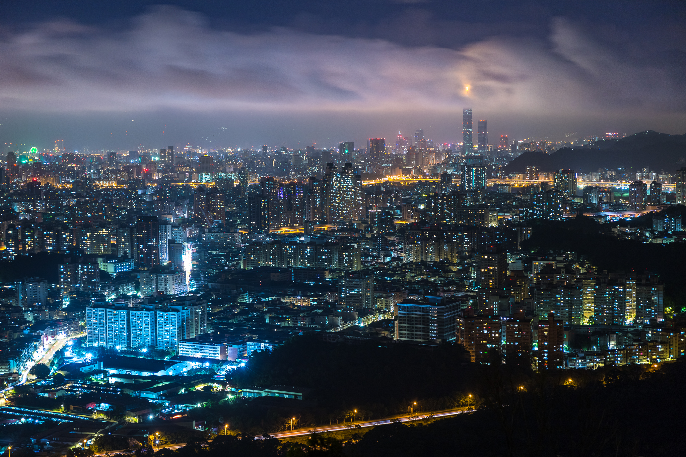
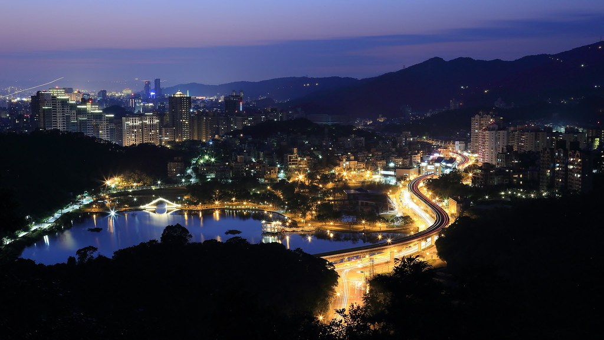
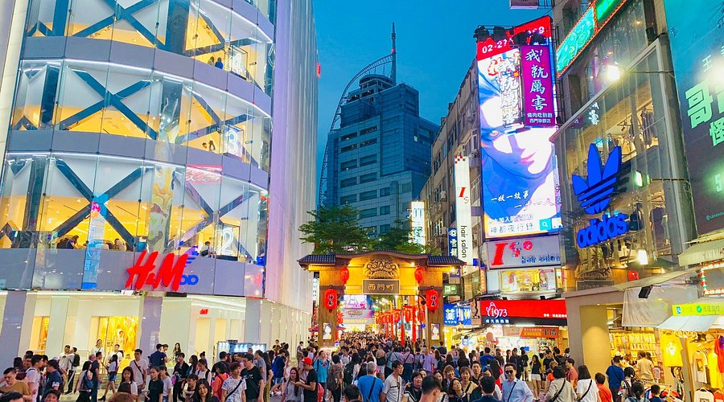
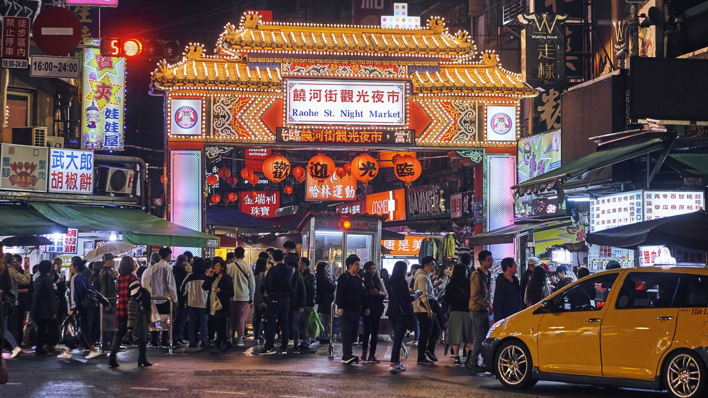

La Capital de la Electrónica
Taipei combina una infraestructura moderna con raíces culturales profundas. En sus calles, los mercados de electrónica y los templos tradicionales crean una atmósfera única donde la tecnología y la historia coexisten.
Desde la Torre Taipei 101 hasta el distrito tecnológico de Neihu, la ciudad ofrece una experiencia futurista en cada rincón.
📍 Ubicación y Mapa
Taipei es una ciudad que fusiona tradición y vanguardia tecnológica:
- ⚡ Taipei 101 - Icono arquitectónico y comercial.
- 🌆 Neihu - Distrito tecnológico y de innovación.
- 💠 Ximending - Centro de entretenimiento digital y cultura urbana.
Mapa interactivo de Taipei
🚀 Tecnología y Avances Urbanos
Taipei impulsa la innovación con infraestructura digital avanzada:
- 🏗️ Smart City - Proyectos de ciudades inteligentes con IA.
- 💡 Conectividad extrema - Una de las velocidades de internet más rápidas del mundo.
- 🚄 Metro automatizado - Sistemas de transporte sin conductor.
🎭 Cultura Urbana y Cyberpunk
Taipei combina lo tradicional con la tecnología de vanguardia:
- 🌆 Distrito Ximending - Pantallas LED, moda futurista y entretenimiento digital.
- 📱 Pagos digitales - Economía basada en transacciones móviles.
- 🎨 Mercados nocturnos tech - Gadgets avanzados y comercio de tecnología.
📷 Galería


Vista nocturna de Taipei
Taipei 101 iluminado
Distrito tecnológico de Neihu
Ximending y su cultura futurista
Mercados nocturnos con tecnología